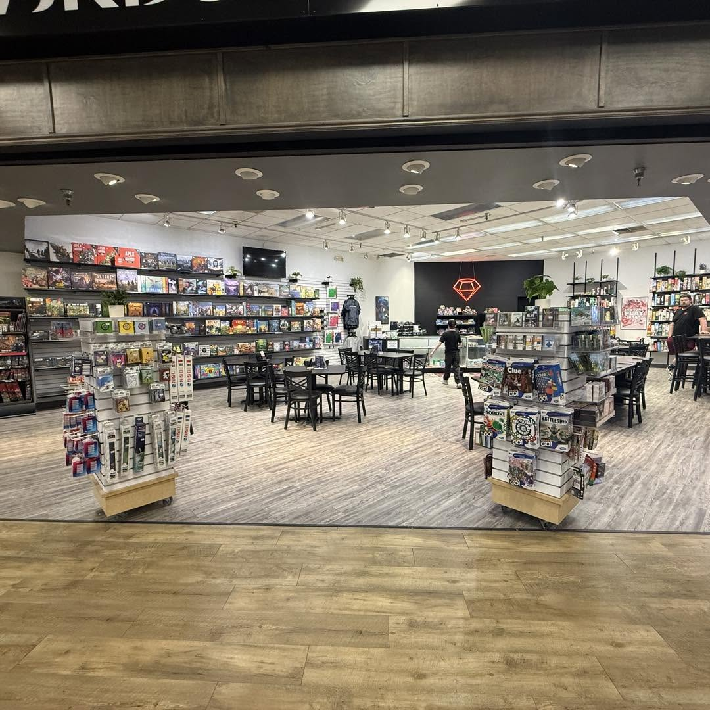
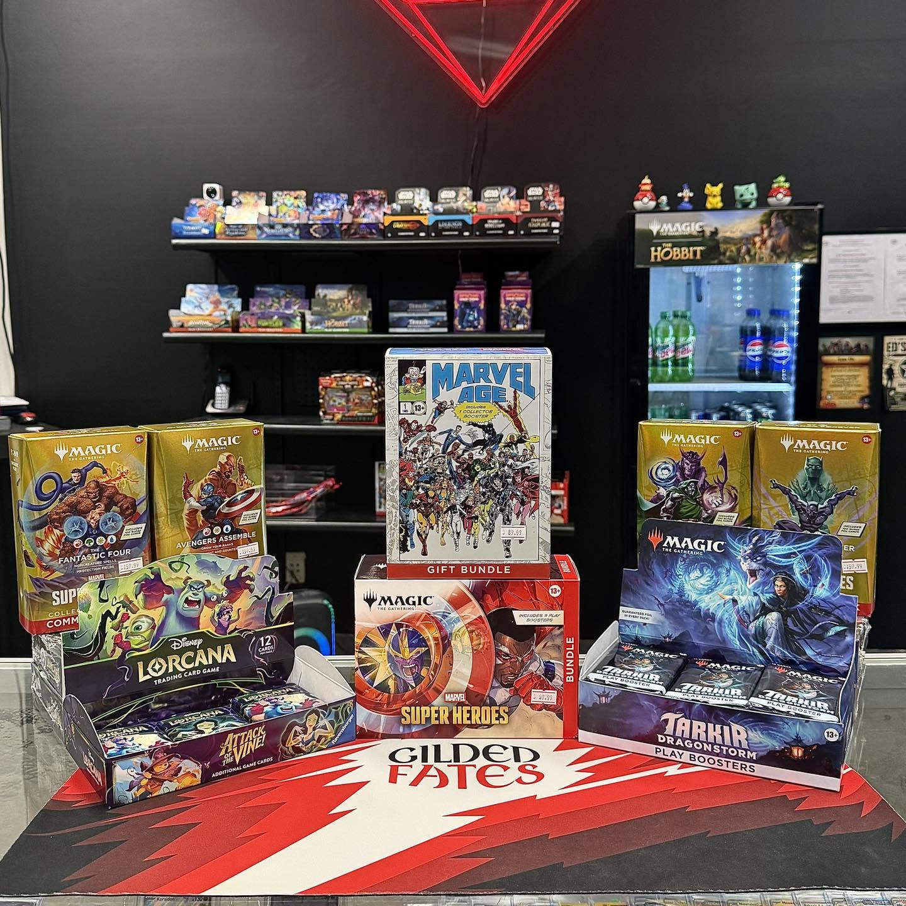
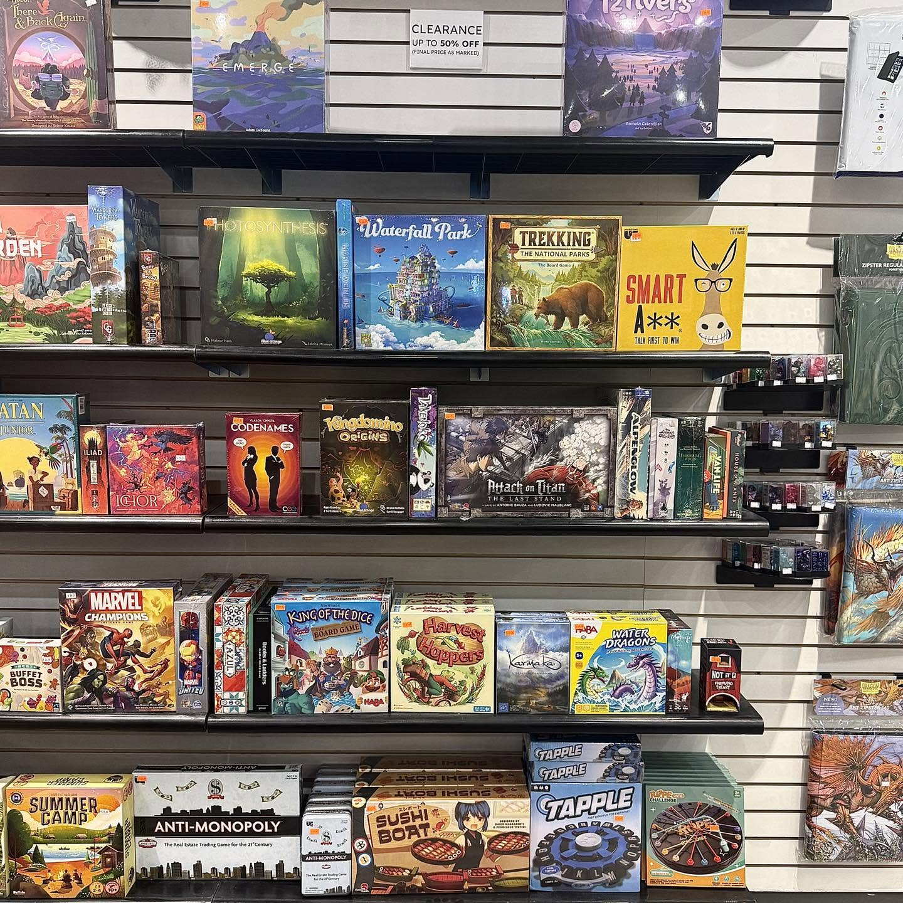
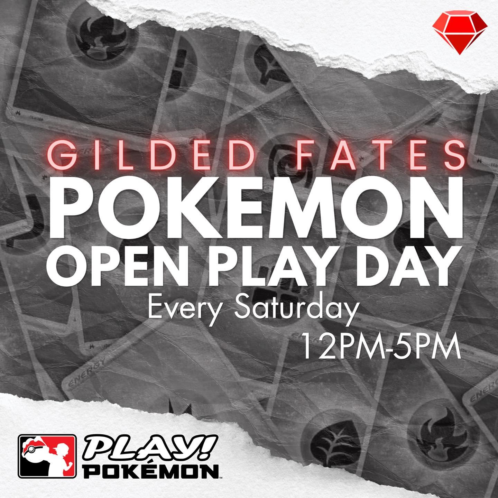
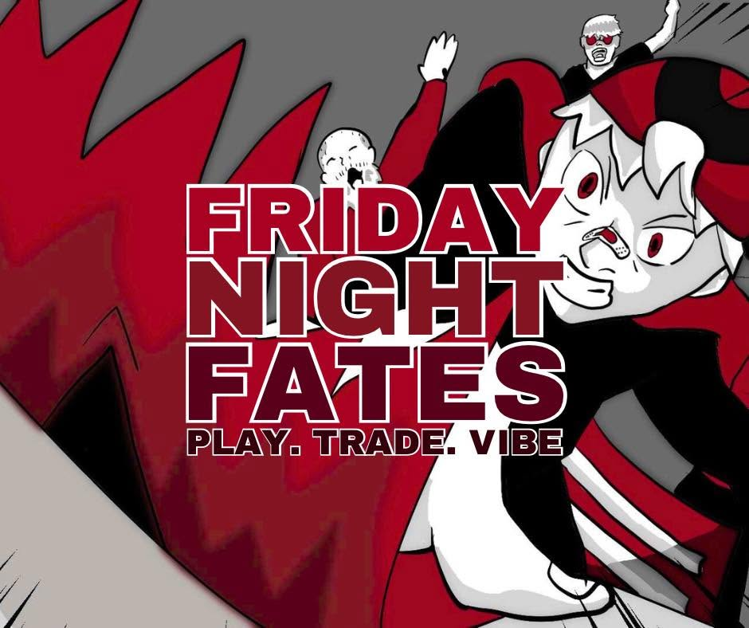
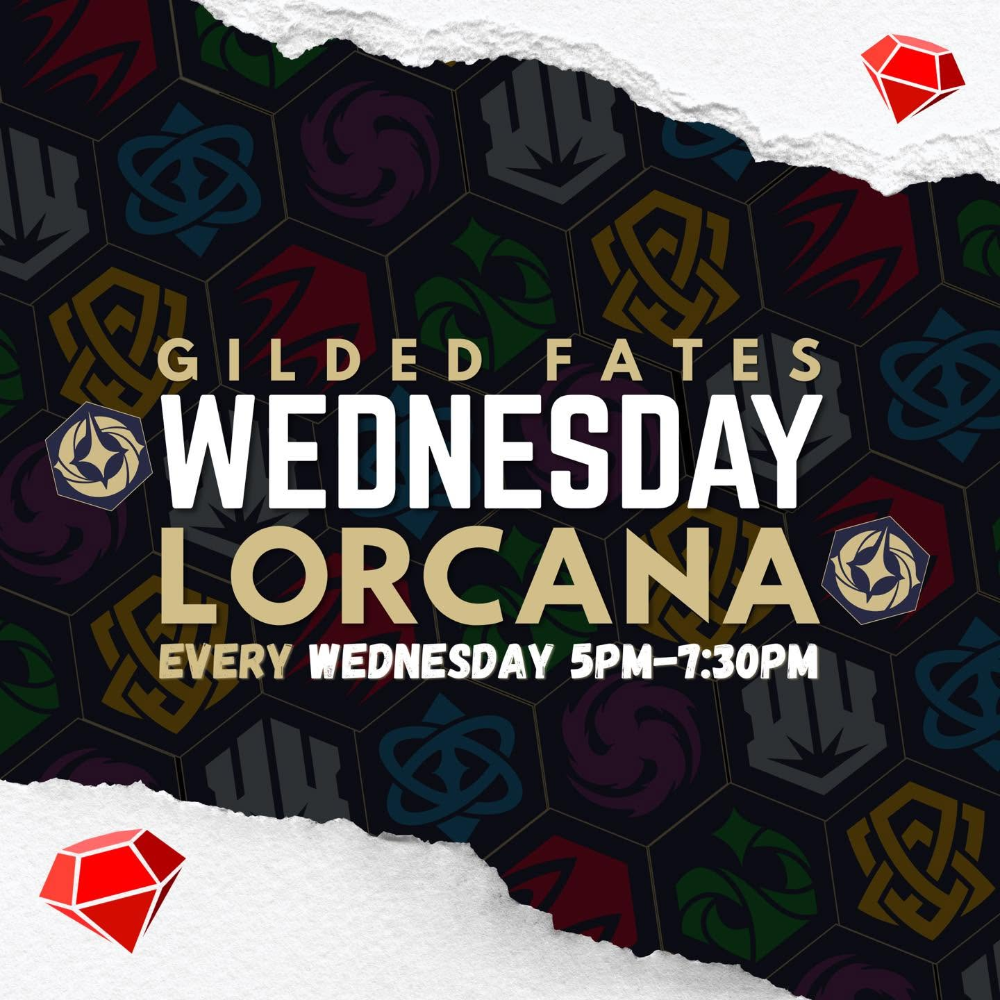
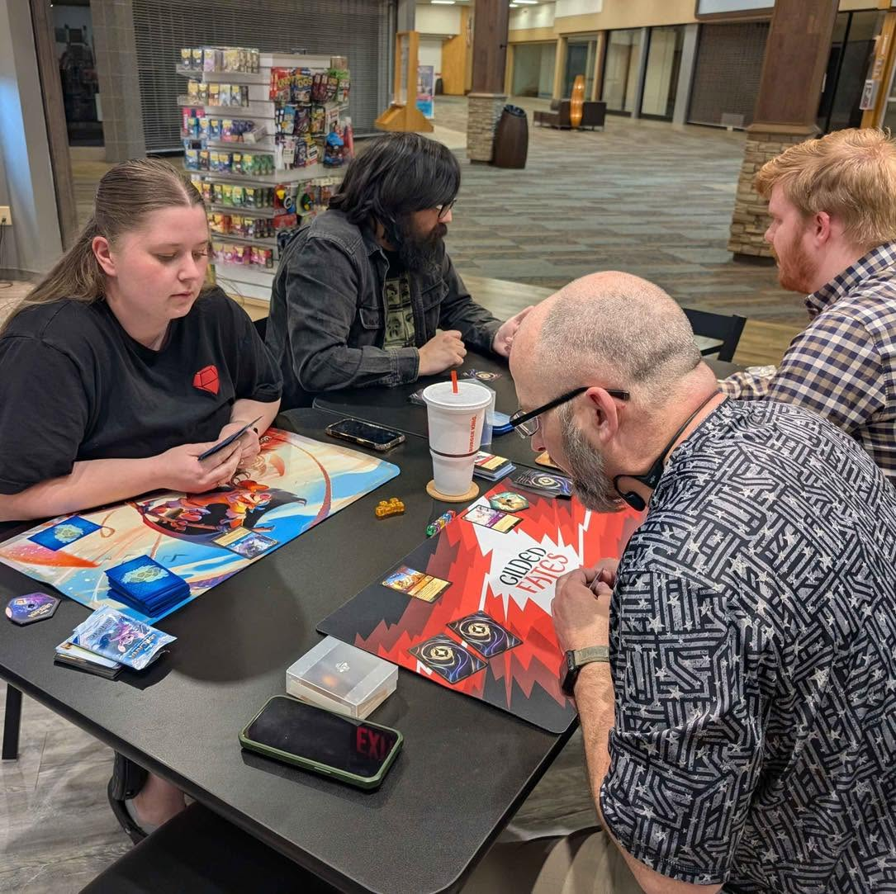

Games to Explore
Take a look at different cards and games, whether you're collecting or trying something new.
Emporia, Kansas · Local game store
Whether you collect trading cards, like board games, or just want somewhere to play with friends, Gilded Fates Cards & Games is a place to check out in Emporia.
Plan a Visit
Gilded Fates is a local store for people who enjoy trading card games, tabletop games, and meeting other players. I wanted this website to show what they have and why having a gaming place in town is important.
Take a look at different cards and games, whether you're collecting or trying something new.
Game nights and open play are a chance to meet other people who enjoy the same hobby.
Having a gaming store nearby gives the community a place to play rather than having to travel out of town.
From collecting cards to getting a group together for a board game, there is a lot to explore.



One of the things I like about a local game store is having somewhere to actually play. Events and casual game nights can be a good way to meet people and learn a new game.


Event schedules can change. Check with the store before planning around a specific event.
It's easy to buy games online, but there's something different about being able to ask questions, see what people are playing, and sit at a table together. That's why I chose Gilded Fates for this project.
If you've never tried a trading card game or a tabletop game before, a local store can be a good place to start.

I'm adding my promotional video for this class project here. It will show up once the video is recorded and uploaded.
Video for INF 250 is still being worked on.
Interested in seeing the store for yourself? Visit the location page to find the address and other details.
Find the StoreThis is the form required for the freeCodeCamp landing page project. It is a test form, not a real store mailing list.
I still need to fill out the photo credits in CREDITS.md.